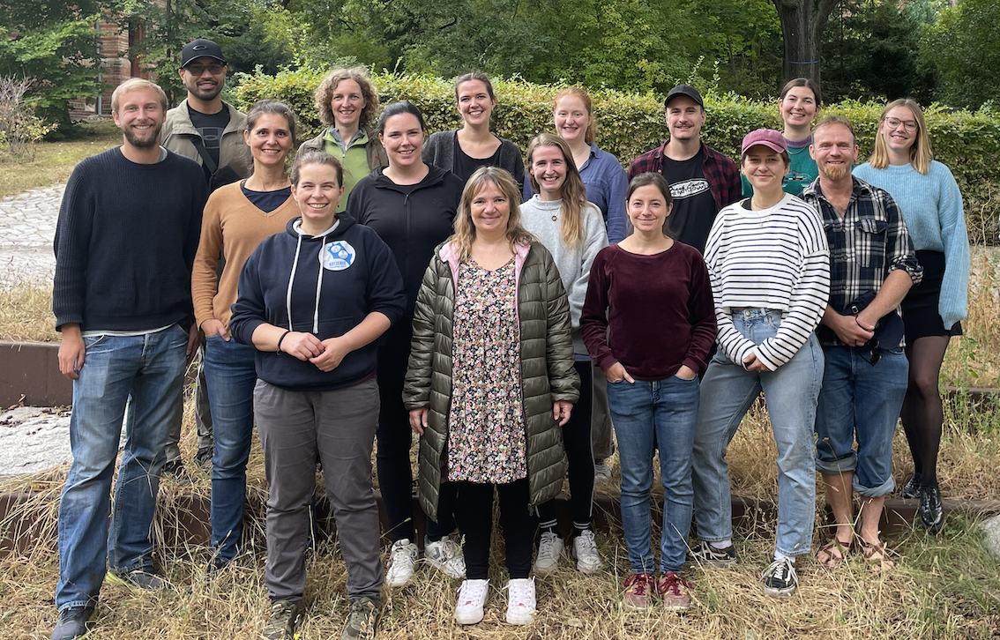

I am fascinated by the question why species and individuals are where they are, how they get there and how they manage to sustain. This is central to understanding how they will respond to changes in their abiotic and biotic environment, for example due to climate change.
In my team, we tackle research questions across several spatial and temporal scales. For example, we study drivers of broad-scale species distributions, of population dynamics as well as individual fitness, and their interplay with inter- and intraspecific interactions and life-history trade-offs. Modelling and data integration is a major part of our work, and we dedicate a lot of time to testing and improving existing methods for biodiversity modelling.
PhD in Geoecology, 2011
University of Potsdam
Diplom (M.Sc.) in Geoecology, 2007
University of Potsdam

For opportunities to join the lab, please have a look here.
Group leader:
Administrative assistant:
Scientific programmer:
Postdocs:
PhD students:
Research and student assistants:
Bachelor/Master students:
Alumni:
Interdisciplinary project funded by the Swiss Data Science Center (2020-2022).
DAAD research exchange with Univ. Melbourne (2019-2020).
Emmy Noether project funded by the German Science Foundation DFG (2018-2023).
Ambizione project funded by the Swiss National Science Foundation SNF (2016-2019).
Interdisciplinary project funded by the Swiss Data Science Center (2017-2019).
Marie Curie fellowship funded by FP7 (2014-2016).
My PhD research funded by Scholarship from University of Potsdam (2007-2011).
You can find a full list of my publications here.
My ResearcherID is E-2439-2012. You can also find me on ResearchGate and GoogleScholar.
Teaching materials for practicals:
Current teaching:
You can download some of my codes from my github site.
Latest software developments in my team include: